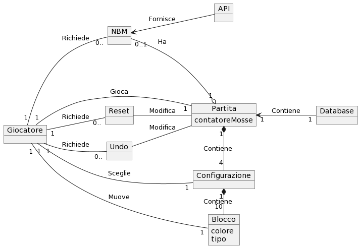

Manuale
Come installare e lanciare il software
Scaricare il programma in formato .jar dal seguente link cliccando sul tasto Download. Una volta ottenuto il file, avviarlo con un doppio click per fruire dell'applicazione.
NB: Per mancanza di supporti alternativi, l'avvio del programma è stato testato solo su SO Windows. In caso di mancato funzionamento seguendo le indicazioni fornite sopra, si suggerisce di clonare la repository fornita su GitHub ed eseguire su di un IDE (eg. IntelliJ).
Panoramica su come sono state realizzate le funzionalità richieste
e funzioni
riutilizzate da librerie esistenti
Inizialmente abbiamo letto la documentazione dell’API presente al seguente
link.
Abbiamo creato la classe Api per creare il collegamento all’API e raccogliere i dati all’interno di vettori di
stringhe sui quali poi l’utente avrebbe effettuato la ricerca. Abbiamo poi creato la classe ResearchMethods per
effettuare le ricerche all’interno di tali vettori.
Come viene effettuata la ricerca
L’elemento all’interno del quale effettuare la ricerca è un vettore di oggetti,
da noi chiamati “nodi”, che contiene tutti i possibili servizi con le relative
caratteristiche (nazione, provider, tipo di servizio e stato).
La ricerca viene effettuata tramite 4 metodi (ognuno per ogni elemento legato al servizio), eseguiti
sequenzialmente.
Dopo ogni metodo il vettore di nodi contiene solo gli elementi che effettivamente hanno le caratteristiche
richieste come parametro, arrivando quindi ad una situazione finale in cui contiene
solo i servizi cercati.
Parte Grafica
Successivamente abbiamo iniziato a definire la parte grafica grazie
alla libreria esterna JavaFX e al supporto di SceneBuilder, un software che
facilita la creazione di applicazioni GUI tramite un’ interfaccia, restituendo
un file in formato FXML da inserire all’interno del progetto.
Grazie ad esso abbiamo definito l’ossatura grafica, assegnando poi
il comportamento dei vari componenti attraverso le classi
e i metodi delle libreria JavaFX. Abbiamo implementato due tipologie di
visualizzazione diversa: una per le nazioni (che possono essere associate
facilmente all’immagine di una bandiera, rendendo la ricerca più facile
e intuitiva) e quello delle altre caratteristiche del servizio, quindi
provider, tipo di servizio e stato (solitamente elenchi più numerosi e
non associabili a immagini, quindi preferendo un semplice
elenco con checkbox).
Come ultima cosa, abbiamo sfruttato la funzione di JavaFX che permette di
ridefinire la grafica del software utilizzando degli script in linguaggio
CSS. Questo è servito per creare un’interfaccia che rendesse più gradevole
e fruibile l’utilizzo dell’applicazione all’utente finale.
Design Pattern
Abbiamo modellato il codice utilizzando i seguenti Design Pattern
GoF Pattern
•Singleton: Abbiamo utilizzato questo design pattern per la classe Api. Infatti una peculiarità della nostra applicazione è quella di eseguire una sola richiesta alla libreria, una scelta che ci ha permesso di rendere più veloce e performante il programma. Inoltre ad assicurare una maggiore sicurezza, dal momento che ne rende possibile l’utilizzo anche nel caso in cui la connessione internet dell’utente venisse a mancare nei momenti successivi all’unica creazione dell’istanza di API.
•State: Abbiamo deciso di adottare questo design pattern nella creazione della
classe Graphic Nation, ovvero la classe che definisce la struttura grafica di ogni nazione.
Questa può assumere due stati: selezionata o deselezionata e, il controllo di questo stato,
è determinato semplicemente nella classe stessa, grazie all’uso di una variabile booleana.
In base a questo parametro cambia il comportamento dell'oggetto.
Anche la classe MainController contiene una variabile che ne definisce lo stato.
In questo caso la variabile è un intero perchè l'oggetto si può trovare in 3 stati
diversi, riferiti alla ricerca(ricerca per nazione, per provider/tipo servizio/stato
servizio, risultato).
Grasp Pattern
•Controller: La classe MainController è un Controller, ossia un oggetto che è responsabile della comunicazione tra interfacce e sistema, per mettere in relazione GUI e l'applicazione. Infatti la suddetta classe è incaricata di recepire gli input forniti dall'interfaccia grafica sviluppata sui file FXML ed elaborare i risultati delegando i compiti secondari ad altre classi, per poi ricevere l'output da reintegrare nella schermata visualizzata in base all'azione eseguita.
•Creator:Abbiamo progettato le classi Nation, TypeOfService e Results secondo le indicazioni del Grasp Pattern Creator. Nel programma le istanze di GraphicNation, LabelType e GraphicResult vengono create unicamente attraverso le rispettive classi Creator.
| Librerie Esterne utilizzate | Funzioni |
|---|---|
| org.json | per lavorare con i file in formato Json, formato utilizzato dall’API per inviare la risposta. |
javafx |
Per definire l’interfaccia grafica del programma |
Domain Model
L’applicazione riceve i dati dall’ EU-Trust Service API. L’utente può scegliere se visualizzare la lista delle nazioni, la lista dei tipi di servizio oppure eseguire una ricerca. In caso eseguisse una ricerca, dopo aver selezionato i parametri desiderati l’applicazione restituisce come risultato un elenco di servizi con i relativi attributi.

Design Model
L’applicazione inizia la sua esecuzione dalla classe EUTrustServicesApplication.
La parte grafica è affidata alla classe MainController, che ottiene i dati
tramite la classe Api, la quale si occupa anche di definire i metodi per filtrare
i dati selezionati dall’utente e di salvare i servizi in entità della classe Node.
Per eseguire la ricerca si utilizzano i metodi definiti nella classe ResearchMethods
mentre, in caso di mancata selezione di un parametro da parte dell’utente, viene lanciata l’eccezione
NoElementException.
La classe ImagesNations fornisce una mappa che associa nome e bandiera delle nazioni alle classi
GraphicResult e GraphicNation. La prima fornisce l’oggetto grafico per rappresentare
il singolo risultato alla classe Results, la quale si occupa della creazione della grafica per
rappresentare i risultati finali. La seconda invece fornisce l’oggetto grafico per rappresentare la singola nazione
alla classe Nations, la quale si occupa di creare la grafica per rappresentare le nazioni e gestisce
la loro selezione. La classe LabelType fornisce l’oggetto grafico per rappresentare il singolo tipo di
servizio alla classe TypeofService, la quale si occupa della gestione del caricamento degli elementi
grafici degli oggetti di tipo servizio.
Infine, in caso alcuni parametri passati a una funzione siano errati viene lanciata l’eccezione IllegalParameters.

INTERACTIONS DIAGRAM (richiesta_lista_tipi_di_servizio)
Questo diagramma descrive l’esecuzione di un’istanza dell’applicazione nella quale l’utente richiede
la lista dei tipi di servizio offerti dal sito. La classe MainController si occupa innanzitutto dell’avviamento
della classe Api che si occuperà di ottenere i dati, successivamente inizializza le classi ImageNations, Nations e TypeService.
L’esecuzione prosegue poi con la richiesta da parte dell’utente di visualizzare la lista completa dei tipi di servizio, effettuata
attraverso l’apposito pulsante. A questo punto la classe TypeofService ha il compito di fornire l’oggetto grafico per rappresentare
ogni tipo di servizio mentre MainController si occuperà della visualizzazione completa della lista nei confronti dell’utente.
.svg "Interaction Diagram(richiesta_lista_tipi_servizio)")
INTERACTIONS DIAGRAM (richiesta_lista_nazioni)
Questo diagramma descrive l’esecuzione di un’istanza dell’applicazione nella quale l’utente
richiede la lista dei paesi. La classe MainController si occupa innanzitutto dell’avviamento della
classe Api che si occuperà di ottenere i dati, successivamente inizializza le classi ImageNations,
Nations e TypeService. L’esecuzione prosegue poi con la richiesta da parte dell’utente di visualizzare
la lista dei paesi effettuata attraverso l’apposito pulsante. A questo punto la classe Nations ha il compito
di fornire l’oggetto grafico per rappresentare ogni paese mentre MainController si occuperà della visualizzazione
completa della lista nei confronti dell’utente.
.svg "Interaction Diagram(richiesta_lista_stati)")
INTERACTIONS DIAGRAM (ricerca)
Questo diagramma descrive l’esecuzione di un’istanza dell’applicazione nella quale l’utente esegue una ricerca
completa. La classe MainController si occupa innanzitutto dell’avviamento della classe Api che si occuperà di ottenere
i dati, successivamente inizializza le classi ImageNations, Nations e TypeService. L’esecuzione prosegue poi con la richiesta
da parte dell’utente di eseguire una ricerca, effettuata attraverso l’apposito pulsante. A questo punto la classe Nations ha
il compito di fornire l’oggetto grafico per rappresentare ogni nazione a MainController che si occuperà della visualizzazione
completa della lista e della gestione delle selezioni da parte dell’utente. Una volta che egli avrà selezionato le opzioni desiderate
e premuto il tasto ‘Avanti’, la classe MainController richiederà la lista dei servizi filtrata attraverso i parametri alla classe
ResearchMethods. Una volta ottenuta tale lista MainController presenterà all’utente la lista dei providers disponibili nei paesi selezionati
attendendo che egli li scelga e prema il tasto ‘Avanti’. A questo punto verrà effettuata un nuovo filtraggio da parte di ResearchMethods che
fornirà una nuova lista di servizi. L’utente in seguito dovrà scegliere, con le stesse modalità, prima i tipi e poi gli stati del servizio
che gli interessano e ResearchMethods si occuperà degli ultimi due filtraggi.
Ora si entra nella parte finale della procedura di ricerca, MainController inizializza la classe Results che gli fornirà la grafica per la rappresentazione
dei risultati finali all’utente il quale potrà scegliere di tornare, tramite il tasto ‘Home’, al menu iniziale per effettuare una nuova ricerca.
.svg "Interaction Diagram(ricerca)")
Use Cases

- Use Case 1: Scegliere configurazione iniziale
- Use Case 2: Muovere i blocchi nelle posizioni consentite
- Use Case 3: Utilizzare funzione di reset
- Use Case 4: Utilizzare funzione di undo
- Use Case 5: Richiedere "next best move"
- Use Case 6: Visualizzare counter delle mosse effettuate
- Use Case 7: Salvare lo stato corrente
- Use Case 8: Ripristinare partita salvata
| Use Case 1 | |
|---|---|
| Nome dello Use Case | Scegliere configurazione iniziale |
| Attori | Giocatore |
| Descrizione | Il giocatore può selezionare una tra quattro configurazioni iniziali da cui partire con il gioco |
| Precondizioni | Nessuna mossa deve essere stata effettuata, oppure deve essere stato appena indotto un reset della partita |
| Scenario Principale | Viene impostata dal programma la disposizione iniziale dei blocchi scelta dal giocatore |
| Scenario Alternativo | La partita può iniziare con la configurazione fornita dal programma |
| Post-Condizioni | Resettare il counter delle mosse, salvare lo stato corrente, elaborare "next best move" |
| Note | Valutare se è sempre possibile determinare il "next best move" dalla condizione iniziale |
| Use Case 2 | |
|---|---|
| Nome dello Use Case | Muovere i blocchi nelle posizioni consentite |
| Attori | Giocatore |
| Descrizione | Il giocatore può muovere i blocchi in uno degli spazi liberi sufficientemente grandi |
| Precondizioni | Deve esistere una posizione consentita, ossia uno spazio libero |
| Scenario Principale | Il blocco selezionato viene spostato di una posizione nella direzione scelta dal giocatore |
| Scenario Alternativo | Il blocco selezionato non si muove |
| Post-Condizioni | Incrementare il counter delle mosse, salvare lo stato corrente, elaborare "next best move" |
| Note | - |
| Use Case 3 | |
|---|---|
| Nome dello Use Case | Utilizzare funzione di reset |
| Attori | Giocatore |
| Descrizione | Il giocatore può resettare la partita attraverso un tasto dedicato. |
| Precondizioni | - |
| Scenario Principale | In qualsiasi momento l giocatore può decidere di resettare la partita premendo il tasto "reset". I blocchi devono essere sistemati nella configurazione iniziale |
| Scenario Alternativo | Se il giocatore non ha ancora effettuato alcuna mossa, il reset non fa nulla |
| Post-Condizioni | Resettare il counter delle mosse, salvare lo stato corrente, elaborare "next best move" |
| Note | - |
| Use Case 4 | |
|---|---|
| Nome dello Use Case | Utilizzare funzione di undo |
| Attori | Giocatore |
| Descrizione | Il giocatore può scegliere di annullare una o più mosse, in ordine cronologico dalla più recente alla meno recente, fino alla situazione di partenza |
| Precondizioni | Deve essere stata eseguita almeno una mossa |
| Scenario Principale | La disposizione dei blocchi ritorna allo stato precedente alla mossa eseguita che si vuole annullare |
| Scenario Alternativo | Non viene applicata alcuna modifica allo stato di gioco |
| Post-Condizioni | Decrementare il counter delle mosse, salvare lo stato corrente, elaborare "next best move" |
| Note | - |
| Use Case 5 | |
|---|---|
| Nome dello Use Case | Next Best Move |
| Attori | Giocatore(?) |
| Descrizione | Viene fornita la mossa migliore per quella configurazione |
| Precondizioni | La partita non deve essere finita |
| Scenario Principale | ogni volta che si clicca su questo bottone un blocco alla volta verrà spostato in modo da ottenere la vittoria nel minor numero di mosse necessarie. |
| Scenario Alternativo | Viene visualizzato il messaggio "Mossa non disponibile" |
| Post-Condizioni | Incrementare il counter delle mosse, salvare lo stato corrente, calcolare la next best move |
| Note | - |
| Use Case 6 | |
|---|---|
| Nome dello Use Case | Visualizzare counter delle mosse effettuate |
| Attori | Giocatore |
| Descrizione | Il giocatore deve ruscire a visualizzare il counter delle mosse |
| Precondizioni | Deve essere disposto un counter nell'interfaccia grafica che mostra il numero di mosse svolte fino a quel momento |
| Scenario Principale | Ogni volta che il giocatore fa una mossa, il counter viene aumentato |
| Scenario Alternativo | - |
| Post-Condizioni | - |
| Note | - |
| Use Case 7 | |
|---|---|
| Nome dello Use Case | Salvare lo stato corrente |
| Attori | Gioco |
| Descrizione | Il gioco deve sempre salvare lo stato corrente |
| Precondizioni | - |
| Scenario Principale | Ogni volta che il giocatore effettua un'azione che impatta sulla disposizione dei blocchi (mossa, undo, reset o scelta della configurazione iniziale), il gioco deve salvare automaticamente lo stato della partita, in modo che, se il programma dovesse essere chiuso, all'avvio successivo lo stato della partita possa essere ripristinato |
| Scenario Alternativo | Se il giocatore non ha ancora effettuato alcuna mossa, il reset non fa nulla |
| Post-Condizioni | - |
| Note | Lo stato corrente deve comprendere la configurazione dei blocchi, le configurazioni iniziali, il counter delle mosse, lo storico delle mosse |
| Use Case 8 | |
|---|---|
| Nome dello Use Case | Ripristinare partita salvata |
| Attori | Gioco |
| Descrizione | Quando il giocatore riapre l'applicazione, il gioco carica l'ultimo stato salvato |
| Precondizioni | Deve essere presente un salvataggio di gioco, la partita caricata non deve essere già conclusa |
| Scenario Principale | La disposizione dei blocchi ritorna allo stato precedente alla mossa eseguita che si vuole annullare |
| Scenario Alternativo | Non viene applicata alcuna modifica allo stato di gioco |
| Post-Condizioni | Decrementare il counter delle mosse, salvare lo stato corrente, elaborare "next best move" |
| Note | - |
Test
Unit Tests Results

Clicca per vedere i risultati degli unit tests
System Tests

Clicca per vedere i System Test
JavaDoc
Clicca per vedere file JavaDoc